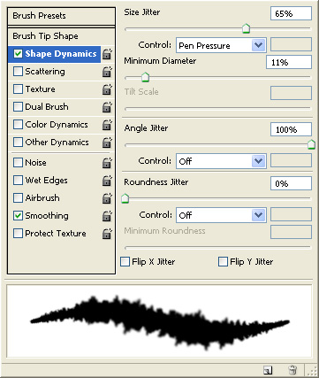

Here's a few photoshop tips related to making texture maps for 3d
images. While there are plenty of tutorials out there discussing how to
paint texture maps for games and film, this tutorial is not trying to
be
all encompassing, it's just a collection of tips that I've found people
didn't know about that have always been really helpful to me, hopefully
you find them helpful too.
This is a pretty standard trick that most people know, but I do a
slight variation that you may find useful.
Say you have
a texture fragment like this (This is a photo I took at Lake Mead)...
And you want to use it to tile (repeat) over a large surface.
This of course doesn't look even remotely natural because you can
see the seams (see the red arrows). So how to make the texture
tileable?
The first trick
under your belt should be the offset filter. Take your original image,
use the offset filter (make sure it's set to wrap around) and set it to
half the size of your image, in this case, my image is 400x400 pixels,
so set it to 200x200 pixels. You get this result.
Now use the clone brush to clone parts of the rock overtop of the
seam. You get this result...
Now it tiles nicely with no obvious seams...
This is a pretty standard technique, but one trick I like to mention
is be careful which brush you use to do you cloning. If you use a brush
that's too hard or too soft, you'll still have problems at the seams.
For example,
here's this hard brush...
being used to clone this image (the image has been enlarged so we
can see the details)...
Here's the result, notice how it's slightly better, but you can see
the hard edge of the brush...
So the answer is usually use a soft edged brush, but that can also
cause problems...
This is far better, but notice the details sort of fade into each
other in the seam area. So you get this big blurry mess in the middle.
This artifact is also be undesirable, so for
my work I use a chaotically shaped hard/soft brush, which isn't too
hard, isn't too soft, and is oddly shaped so that the eye can't pick up
on the brush strokes...
Also adjust the brushes parameters with a large "Angle Jitter", that
way each brush stroke will have a different pattern (since the brush
will be rotated a random value as you clone), and maybe some size
jitter (although it's not necessary).

This gives far more realistic results when you blend the seam away.
Here's the image at regular resolution, no blurry mess, no hard
edges...
Cropping An Image That's Off The Canvas
This happens to me a lot. Say you have an image that's 300x300 pixels...
Using The High Pass Filter
To Make Tileable Textures
Say you have a texture fragment you want to make tileable, but it
has
some big areas of light or dark such as this...
Notice how the lower left corner is really darker than the rest of
the image. If we try the offset trick, we get this...
This is going to be really hard to use the clone brush on, because the seam area is so different, one side is really dark and one side is really bright.
This is where the high pass filter is useful. The high pass filter
lets you remove large changes is brightness without removing the small
changes in brightness. And that's what we're after here, we want the
large changes in brightness to go away (the dark left corner), but we
don't want to obliterate the small changes in brightness which are
the cracks in the rock.
The procedure is like this, take your first image, duplicate it as a
new layer. Then run the Filter -> Other -> High Pass on your
duplicated layer. Play with the Radius until you've gotten rid of the
dark corner, but still have the small rock cracks. For this example, I
used a value of 28.0. Smaller values will remove the smaller details,
whereas larger values only remove the large brightness changes.
Experiment to find the ideal value for your particular image.
This is the result of the filter...
Now take that duplicated layer and set the mode to Luminosity...
The reason to do this is because the high pass filter can change the
colors of your image pretty radically. For example, if you look at the
image
above, running the low pass filter on the background copy layer made
the rock much
yellower than the original rock. So you want to keep the color of your
original image, but use the brightness information of your high pass
filtered image, hence you set the layer to luminosity.
Now when you use offset on the result, it looks much better, and you
can continue following the offset procedure above to remove the seam
(Note: Before offseting, flatten your image, otherwise, you'll only
offset your top layer instead of the combination of both layers.)
For more information, here's a more in-depth article discussing the
technique...
Gamasutra - "The Power Of The High Pass Filter"
Additive Mode